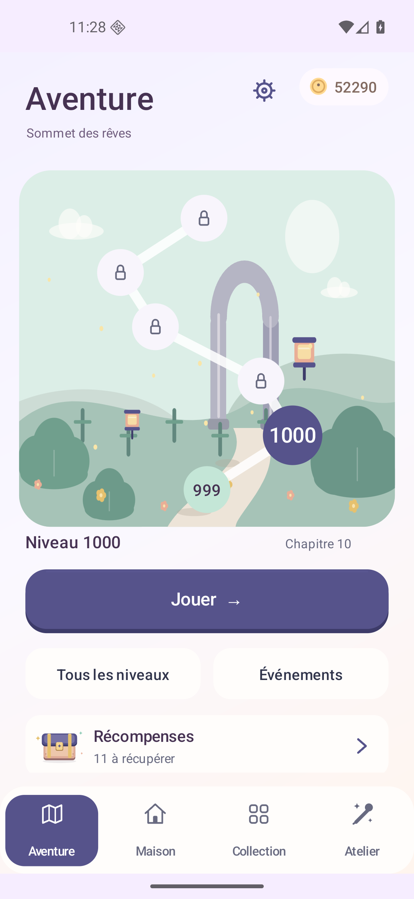
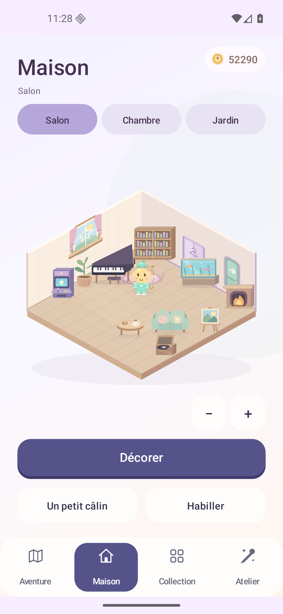
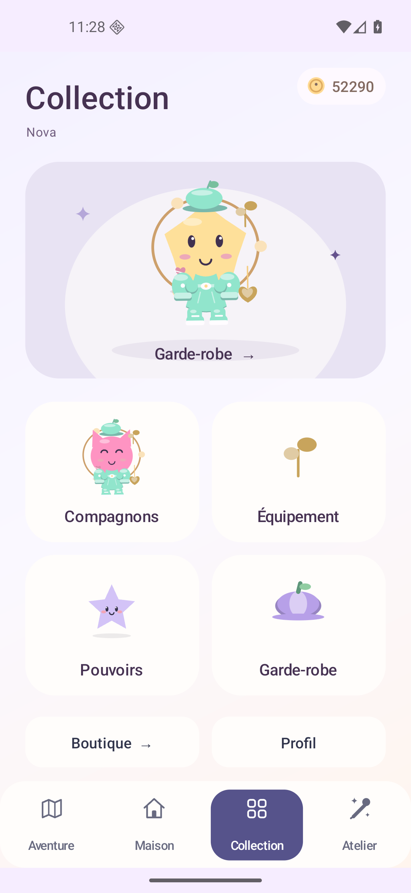
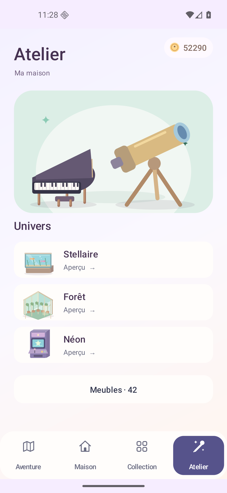
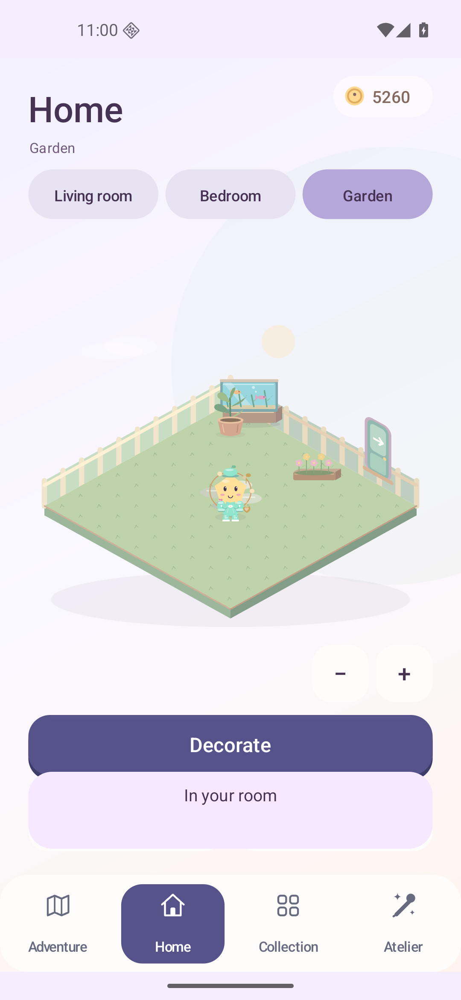
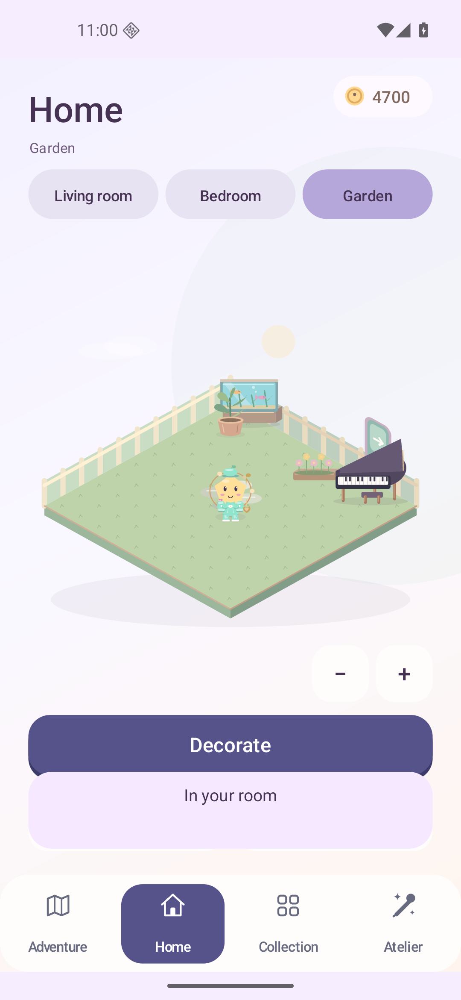
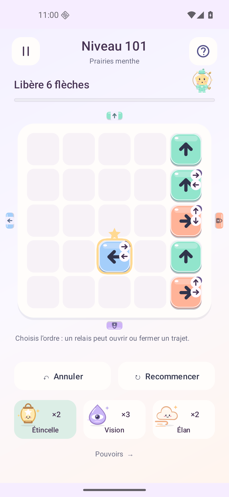

01
AventureAdventure
Ta carte. Ton prochain déclic.Your map. Your next discovery.
LUMA DRIFT · LA REFONTE 1.15LUMA DRIFT · THE 1.15 REDESIGN
Quatre écrans pour respirer. Des portes qui répondent aux pièces. Et une maison où tes nouvelles trouvailles ont enfin leur place.Four destinations with room to breathe. Gates that respond to pieces. And a home with space for your new finds.
1.15.0-rc1 · APK signé · 7,97 Mo · Android 8+1.15.0-rc1 · Signed APK · 7.97 MB · Android 8+
Candidate de test · Annonces de test · Achats réels désactivésTest candidate · Test ads · Real checkout disabled

UN UNIVERS, QUATRE DESTINATIONSONE WORLD, FOUR DESTINATIONS
Le puzzle garde son propre espace. La navigation relie Aventure, Maison, Collection et Atelier, sans tout empiler sur le même écran.The puzzle has a space of its own. Navigation connects Adventure, Home, Collection and Workshop, giving each activity room.
Ta carte. Ton prochain déclic.Your map. Your next discovery.
Trois pièces. Ta disposition.Three rooms. Your layout.

Ton compagnon, son style, ses objets.Your companion, their style and gear.

Des envies à regarder de plus près.New finds to take a closer look at.

PRENDS TES AISESMAKE YOURSELF AT HOME
Salon, chambre, jardin : trois espaces de 10 × 10 cases, disponibles dès le départ. Zoome pour t’approcher, déplace la vue, puis fais une place à chaque objet.Living room, bedroom and garden: three 10 × 10 spaces, available from the start. Zoom in, pan around, then find a place for each furnishing.
Les cinq objets de départ sont offerts. Les autres s’achètent avec les LumaCoins gagnés en jouant. Un même dessin peut être placé une fois dans chaque pièce.Five starter furnishings are included. Earn LumaCoins by playing to buy the others. Each design can be placed once in each room.



Des silhouettes et des volumes différents. De quoi composer une pièce, pas seulement changer sa couleur.Different shapes and volumes. Furnish a room with objects that have their own character.

LA BONNE PIÈCE. AU BON MOMENT.THE RIGHT PIECE. AT THE RIGHT TIME.
Les pièces reliées changent l’état de leurs portes quand elles sortent. Une clé libère son sceau. L’ordre de sortie prépare le passage suivant.Linked pieces change their gates when they leave. A key releases its seal. Your exit order sets up the next passage.
Annuler est gratuit et répétable sur les nouveaux plateaux. Il rend l’action annulée. Un essai bloqué ne coûte rien ; recommencer reste gratuit.Undo is free and repeatable on the new boards, refunding the reversed move. A blocked try costs nothing, and restarting is free.
Les 30 premières étapes présentent les règles. Les suivantes les combinent. Tous ces plateaux ont été terminés sur émulateur Android sans achat ni pouvoir.The first 30 stages introduce the rules. Later boards combine them. Every board was completed on an Android emulator without purchases or powers.
Installe cette version par-dessus la précédente. Ta partie déjà ouverte conserve ses règles. Pour découvrir immédiatement les nouvelles portes, touche le numéro du niveau dans Aventure.Install over your previous version. A run already in progress keeps its original rules. To try the new gates immediately, tap the numbered level node in Adventure.
À TOI D’EXPLORERYOUR TURN TO EXPLORE
1.15.0-rc1 · code 17 · 7 970 422 octetsbytes
Une candidate à essayer.A candidate to try. Version de test distribuée directement en APK. Annonces de test ; achats réels et tirages premium désactivés.Test version distributed directly as an APK. Test ads; real checkout and premium draws disabled.
La progression, la maison, l’inventaire et les LumaCoins restent sur ton appareil. La connexion Google ne synchronise pas cette sauvegarde. Les LumaCoins se gagnent en jouant, avec les cadeaux et les quêtes ; ils servent à la maison, aux pouvoirs et à la collection.Progress, home layout, inventory and LumaCoins stay on your device. Google sign-in does not synchronize this save. LumaCoins come from play, gifts and quests; spend them on your home, powers and collection.
LumaGold est une monnaie de compte distincte. « — » indique un solde non chargé. Une capsule locale coûte 150 LumaCoins ; ses probabilités et la compensation des doublons sont affichées avant le tirage.LumaGold is a separate account currency. “—” means its balance has not loaded. A local capsule costs 150 LumaCoins; odds and duplicate compensation appear before drawing.
Ces images sont des captures Android natives entières de la 1.15, sans retouche. Les quatre destinations sont montrées dans la langue choisie. Le salon français présente 11 objets sur un profil ayant terminé 1 000 niveaux ; le jardin anglais et les deux étapes de placement viennent d’un autre profil ayant terminé 100 niveaux. Ce sont deux dispositions distinctes. Dans le jardin final, la serre masque une partie de l’aquarium ; la capture antérieure du même jardin le montre dégagé. Les fonds et décors du site habillent la page.These are full, unedited native Android captures from 1.15. All four destinations follow the selected language. The French living room shows 11 furnishings on a profile that completed 1,000 levels; the English garden and two placement steps come from a separate profile that completed 100 levels. These are two distinct layouts. In the final garden the greenhouse partly hides the aquarium; the earlier capture of that same garden shows it clearly. Website backgrounds and decorations frame the page.
Le parcours des 1 000 niveaux, six langues, un écran compact, la migration, les pouvoirs et la persistance de la maison ont été vérifiés sur émulateur. La fluidité sur ton téléphone et le plaisir dans la durée demandent encore tes essais.The 1,000-level route, six languages, a compact screen, migration, powers and home persistence were checked on an emulator. Performance on your phone and long-term enjoyment still need your playtesting.
APK Android · SHA-256Android APK · SHA-256
07b5bfc2632edc3d34f7583ac71c8343b52d7b926ed526aeb7a88599253df0f9Manifeste des fichiers signésSigned-file manifest
Android App Bundle · 11,38 MoAndroid App Bundle · 11.38 MB
L’AAB sert à la distribution Android ; utilise l’APK pour installer directement le jeu.The AAB is for Android distribution; use the APK to install the game directly.